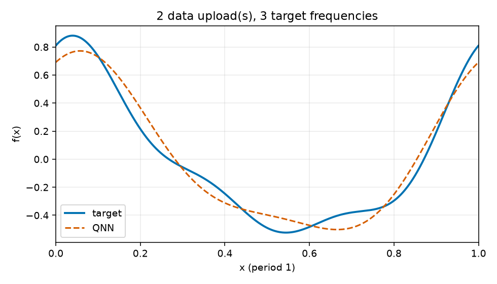
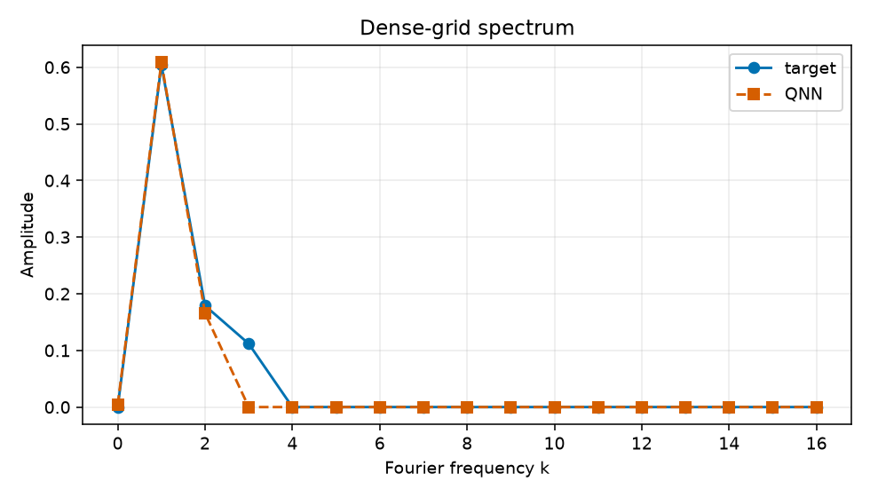

Uploads: 2; target frequencies: 3; train/validation/test: 64/128/512; objective: empirical training MSE only.
{
"run_id": "20261017T023951716642Z_reupload-2_k3_seed-0050_dcf4154f",
"comparison_group": "periodic-function-mse-zero-offset-reupload-sweep-z1-readout",
"data_uploads": 2,
"n_target_frequencies": 3,
"seed": 50,
"data_seed": 314159,
"dataset_sizes": {
"train": 64,
"validation": 128,
"test": 512
},
"target_components": [
[
1,
0.55,
0.25
],
[
2,
0.16,
0.08
],
[
3,
0.1,
0.05
]
],
"target_offset": 0.0,
"objective": "training-set MSE only",
"optimizer": "L-BFGS-B",
"iterations": 17,
"function_evaluations": 270,
"optimizer_success": true,
"optimizer_message": "CONVERGENCE: RELATIVE REDUCTION OF F <= FACTR*EPSMCH",
"initial_train_mse": 0.374930179339294,
"final_train_mse": 0.005797539006919501,
"validation_mse": 0.006126361255100973,
"test_mse": 0.007097913342508439,
"known_frequency_fourier_baseline_test_mse": 2.126123450199506e-31,
"target_support": [
1,
2,
3
],
"predicted_support": [
1,
2
],
"frequency_support_threshold_function_amplitude": 0.001,
"support_precision": 1.0,
"support_recall": 0.6666666666666666,
"target_amplitudes_k0_to_16": [
3.129278520336287e-17,
0.6041522986797286,
0.1788854381999832,
0.11180339887498952,
2.1726615721703016e-17,
2.08338919985173e-17,
7.086725680473781e-18,
1.617279816428843e-17,
3.84330175122779e-18,
9.78496767727623e-18,
2.5811241320803445e-18,
5.559232478380886e-18,
4.36389433120424e-18,
8.739851310843146e-19,
2.3793742160921822e-18,
1.2134355070255081e-17,
6.278752932072422e-18
],
"predicted_amplitudes_k0_to_16": [
0.00427562840732309,
0.6084622494751176,
0.1653785517560337,
3.0158503533384026e-17,
2.255370823830156e-17,
2.4614475940271317e-17,
3.619340061194625e-18,
1.3513093203669891e-17,
4.6228977700011694e-18,
1.646907493813705e-17,
8.609366819265947e-19,
1.1182372789469428e-17,
1.0628080993473588e-18,
6.33988579172389e-18,
6.059784920872942e-18,
1.1464034467835036e-17,
1.5856023514424987e-17
],
"frequency_amplitude_rmse_k0_to_16": 0.027353129356992207,
"artifacts": [
"dataset.npz",
"metrics.jsonl",
"parameters.npz",
"parameters.json",
"evaluation_outputs.npz",
"function_fit.png",
"spectrum.png",
"report.html"
]
}
